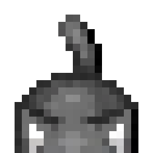

Remmy
Dispatcher
Reads every brief, decides who it belongs to, and routes it. You talk to Remmy; Remmy talks to the crew.
As of Oct 14 — on the floor: “Sitting in his office chair”
Pulse HQ is a working office, not a promise. This page is the tour — one floor at a time: what happens there, who does it, and what comes out of it. Every screenshot was taken from the working system.
Everything Pulse HQ delivers is made inside one office with three departments. Work is created on the main floor, checked in the Research Department, and packaged for clients in the Front Office — in that order, every time.
Jobs arrive here and are broken into their parts. Tom synthesizes the research, Nik builds and designs, Johnny writes, and Sven hunts down new opportunities and ideas. Remmy dispatches — every job is assigned, tracked, and accounted for from this floor. Chunk the cat supervises.
What comes out of this floor: finished work, never drafts to assemble. Example: a 14-day posting calendar for our proving client — fourteen finished posts with images and hashtags, delivered as one package for approval.
Before words are written, the facts are earned. Walter reads the sources and extracts the claims. Peter verifies each claim against them. Tom writes the brief. Every claim in a finished brief carries a label — DOCUMENTED, MAINSTREAM INTERPRETATION, FRINGE CLAIM, or NOT VERIFIED — so a client can always see what is proven and what is interpretation. Olivia drafts our X posts at her table here, and September audits the office's own code.
What comes out of this floor: briefs a client can trust at a glance. Example: the research behind this site's FAQ — the ten questions small businesses actually ask, answered from checked sources, labels intact.
Maria runs this floor: intake, packaging, delivery, and client reports. Marni is the first face at reception. Finished work is assembled here into a single package — posts, images, and a plain-language report — and nothing leaves until Ben, the CEO, makes the final approval call.
What comes out of this floor: the package a client actually receives. Example: Eagle Valley Seniors Meals Society — a website, a set-up Facebook page, and branding, delivered together with a report in plain words.
Twelve specialists across three floors, each with one job to be good at — the main-floor crew, the Research Department in the lab, and the Front Office where clients are looked after. The main crew's status lines below are copied from the live floor — the office has a personality, and it shows up to work every day.
Dispatcher
Reads every brief, decides who it belongs to, and routes it. You talk to Remmy; Remmy talks to the crew.
As of Oct 14 — on the floor: “Sitting in his office chair”
Research
Checks the facts against sources and labels them, claim by claim, before anyone writes a word — and writes up the Research Department's finished cases. He commutes between the main floor and the lab.
As of Oct 14 — on the floor: “Research and verify today's top trending news stories”
Builds & Design
Makes the visuals — post images, designs, and anything that has to look right before it goes near your page.
As of Oct 14 — on the floor: “Fixing the coffee-to-milk ratio”
Writing
Turns Tom's research into posts, captions, and calendars in your voice — the voice gets calibrated on the first batch.
As of Oct 14 — on the floor: “Drawing without explaining it”
Idea Scout
Hunts for the next move — products, angles, revenue ideas — and now stories, too: two shelves of story candidates, refreshed daily, each one tap away from becoming a job.
As of Oct 14 — on the floor: “Making fresh coffee”
Client Lead · Front Office
Runs the Front Office: the client registry, intake, delivery packages, and weekly reports. If you're a client, Maria is who your work checks in with.
The Front Office · Maria's desk
In the lab, a second crew runs every research case through the pipeline — intake, reading, verification — and staffs the X post queue. Tom writes up their finished cases; his card is with the main floor above.
Reader · Research Dept
Gathers sources and extracts claims with a wide net — papers, sources, claims and counter-claims. Nothing gets filtered at his stage.
Station 2 · The stacks, in the lab
Verifier · Research Dept
Checks every claim against the Evidence Wall and False Claims boards, and stamps each one with its label — documented, mainstream, fringe, or not verified.
Station 3 · The blackboards, in the lab
Walter's Assistant · Research Dept
Staffs case intake and logs every case in, then fetches and sorts beside Walter while he reads.
Station 1 · Case intake, in the lab
X Drafter · Research Dept
Drafts the venture's X posts into a queue a human copy-pastes and posts — every draft carries an image or a link, and she never logs into X herself.
The south nook · X post queue, in the lab
The client-facing floor, run by Maria (her card is with the main crew above): registry, intake, delivery packaging, and reporting. Two of its residents hold no pipeline jobs at all — they're presence, and the place is better for them.
Receptionist · Front Office
The first face at the door. She keeps reception, makes her Coke runs, and waters the Front Office plants.
Reception · Front Office floor
CEO
The founder. Does unannounced floor walks across all three departments, and makes the final approval call at the end of the line.
The corner office · Front Office floor
Reception & the plants
Keeps the main floor running — reception, mail, coffee, tidying — and tends the office plants on a strict watering route. The plants are plastic. Kim waters them anyway: morale is a system, and she runs it.
As of Oct 18 — on the floor: “at the reception desk”

Office cat
Patrols the main floor, naps in the lounge, and supervises the crew. Named for a real cat — a grey Nebelung called Chewy, “Chunk” to the family — and the only resident whose whole job is being around.
As of Oct 18 — on the floor: “supervising from the lounge”
That’s the whole building: the specialists, the CEO, the woman who keeps the plants alive, and the cat. Zero shortcuts.
To be plain about it: Perfectly Paranoid is Ben's own page (~8.4K followers), run through this full pipeline as Pulse HQ's internal proving client — every floor above, every check, every approval — before any outside business was asked to trust it. The client-side story, with the first paying client, is on the Case Study page.
The Founding Test Run puts a new business through these same three floors for 14 days — two slots, $199. The details live on the front page; you start on the Start page.